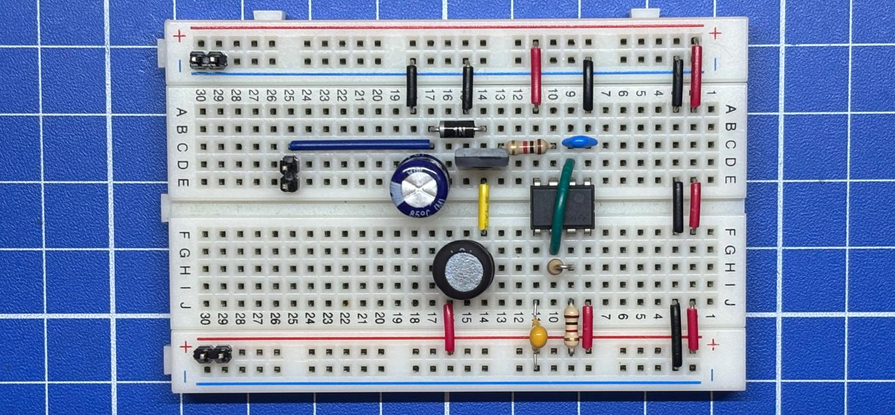
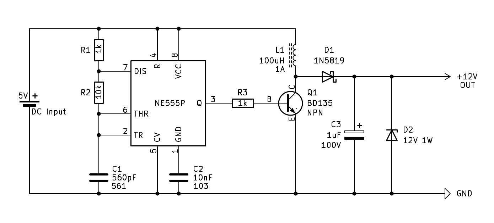

555 Boost converter desde 3V hasta "12V"
Este es otro de esos ejemplos útiles con un 555 ideal para un laboratorio o ejercicio para entender cómo funciona un circuito que convertir desde los “3V” hasta los “12V”. Este tipo de circuito se llaman Boost y se suelen encontrar mucho para alimentar un arreglo de LED’s o pantallas OLED.
La idea la obtuve buscando en Internet hasta que me conseguí con varios post que tenían un diagrama esquemático aceptable y explicaban cómo funciona. Al final probé este 5V to 12V Boost Converter Circuit, la explicación de cómo funciona me quedo con estos dos post A Simple DC-DC Boost Converter using 555 Timer IC y How to Build a Boost Converter Circuit: Explained with Calculations.

Tip
Existen muchos IC especializados para esta función, por lo que tienen mucha mejor eficiencia que un 555.

Use una fuente de alimentación ajustable en la entrada y limite la corriente.
Warning
- Sino usas el transistor correcto se sobrecalienta.
- Sino usas un inductor de 1A por lo menos se sobrecalienta.
- Puede llegar cerca de 90V si no pones un Diodo Zener.
- Dependiendo del IC 555 puede operar desde los 2.xV.
- Suele consumir bastante corriente, por eso no es eficiente.
Con las pruebas que hice conectando una fuente de alimentación ajustable, pude determinar que dependiendo del voltaje de entrada, podía generar los siguientes valores:
- Voltaje de entrada: 3.3V => Voltaje y corriente de salida: 47V / 120mA
- Voltaje de entrada: 5.0V => Voltaje y corriente de salida: 76V / 300mA
Ignore el diodo zener para saber cuál era el máximo voltaje que se llegaba. Con 5V de entrada varios componentes empezaban a calentarse; como el transistor y el inductor.
Componentes
- NE555P.
- BD135.
- Dos resistencias de 1K 1/2W 5%.
- Una resistencias de 10K 1/2W 5%.
- Un condensador cerámico 560pF (561).
- Un condensador cerámico 10nF (103).
- Un condensador electrolítico 1uF de 100V.
- Un inductor con nucleo de ferrita de 100uH 1A. Use el modelo RLB0914-101KL.
- Un diodo schottky 1N5819.
- Un diodo zener de 12V 1W.
Puede cambiar el diodo zener por el valor deseado.